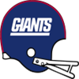
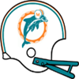
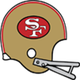
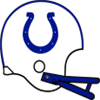
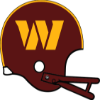
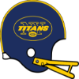
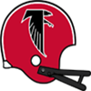
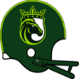
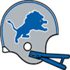

Bengals
Bengals Bills
Bills Cardinals
Cardinals Chargers
Chargers Dolphins
Dolphins Monarchs
Monarchs Raiders
Raiders Ravens
Ravens Seahawks
Seahawks Titans
Titans 49ers
49ers Bears
Bears Buccaneers
Buccaneers Colts
Colts Commanders
Commanders Falcons
Falcons Giants
Giants Lions
Lions Packers
Packers Vikings
Vikings1990 Super Bowl

The New York Giants have defeated the London Monarchs in the 1990 Super Bowl.The final score was Giants 21 - Monarchs 17.
Desmond Ridder - QB had a dominant game on offense playing a key part in the victory.
On defense Howie Long - DE had a stellar outing helping seal the win.
AFC Championship Game
 The London Monarchs have defeated the Baltimore Ravens in the 1990 AFC Championship Game.
The London Monarchs have defeated the Baltimore Ravens in the 1990 AFC Championship Game.
The final score was Ravens 24 - Monarchs 25.
Dan Marino - QB had a dominant game on offense playing a key part in the victory.
On defense E.J. Junior - LB had a stellar outing providing a silver lining to the loss.
NFC Championship Game
The New York Giants have defeated the Chicago Bears in the 1990 NFC Championship Game.
The final score was Giants 30 - Bears 7.
Kevin Mack - FB had a dominant game on offense playing a key part in the victory.
On defense Chuck Howley - DE had a stellar outing helping seal the win.
AFC Divisional Round
 The Baltimore Ravens have defeated the Miami Dolphins in the 1990 AFC Divisional Round.
The Baltimore Ravens have defeated the Miami Dolphins in the 1990 AFC Divisional Round.
The final score was Ravens 24 - Dolphins 17.
Adrian Peterson - RB had a dominant game on offense playing a key part in the victory.
On defense James Houston IV - DE had a stellar outing helping seal the win.
NFC Divisional Round
The New York Giants have defeated the San Francisco 49ers in the 1990 NFC Divisional Round.
The final score was Giants 42 - 49ers 14.
Jay Cutler - QB had a dominant game on offense playing a key part in the victory.
On defense Chuck Howley - DE had a stellar outing helping seal the win.
AFC Divisional Round
The London Monarchs have defeated the Cincinnati Bengals in the 1990 AFC Divisional Round.
The final score was Bengals 10 - Monarchs 17.
James Brooks II - RB had a dominant game on offense playing a key part in the victory.
On defense Leslie O'Neal - DE had a stellar outing providing a silver lining to the loss.
NFC Divisional Round
 The Chicago Bears have defeated the Tampa Bay Buccaneers in the 1990 NFC Divisional Round.
The Chicago Bears have defeated the Tampa Bay Buccaneers in the 1990 NFC Divisional Round.
The final score was Bears 45 - Buccaneers 14.
Steve Young - QB had a dominant game on offense playing a key part in the victory.
On defense Chad Eaton - DT had a stellar outing helping seal the win.
AFC Wildcard Round

The Miami Dolphins have defeated the Buffalo Bills in the 1990 AFC Wildcard Round.The final score was Dolphins 41 - Bills 14.
Boomer Esiason - QB had a dominant game on offense playing a key part in the victory.
On defense Haloti Ngata - DT had a stellar outing helping seal the win.
NFC Wildcard Round

The San Francisco 49ers have defeated the Indianapolis Colts in the 1990 NFC Wildcard Round.The final score was Colts 24 - 49ers 45.
Brock Purdy - QB had a dominant game on offense playing a key part in the victory.
On defense Troy Andersen - LB had a stellar outing providing a silver lining to the loss.
Week 18: QB Jay Cutler (NYG) wins Offensive Player of the Week
The league announced New York Giants quarterback Jay Cutler has been named Offensive Player of the Week.
The Giants defeated the San Francisco 49ers, 42 to 21. Cutler did his part, throwing 5 touchdowns, completing 27 of 31 passes for 383 yards. His outstanding performance now brings his season Touchdown to Interception Ratio to 56 to 10, and a passer rating of 135.1.
Week 18: DE Chris Doleman (IND) wins Defensive Player of the Week

DE Chris Doleman of the Indianapolis Colts has earned the Defensive Player of the Week award. Doleman finished with 6 Tck, 3 Sck, 1 Def TD, 1 FF, 1 FR.Game Recaps for Week 18
Chargers - 36, Titans - 24
Dolphins - 56, Cardinals - 26
Bills - 45, Seahawks - 42
Monarchs - 52, Raiders - 38
Ravens - 27, Bengals - 22
Commanders - 48, Packers - 45
Giants - 42, 49ers - 21
Colts - 24, Lions - 6
Bears - 45, Falcons - 17
Vikings - 28, Buccaneers - 27
Game of the Week: San Francisco 49ers at New York Giants
Our Expert Predictions:
Jeremy Piper : San Francisco 49ers
They field one of the most underestimated defenses. They are 3rd in pass defense. They only give up 199.4 per game. They are 5th in interceptions with 12.
Mary Moore : New York Giants
They are on a win streak. They will continue that streak. They will win this game.
Jim Nox : New York Giants
I think having a leader like Howie Long - DE is the kind of thing that will help the Giants win this game. There are so many factors to consider when making predictions. This one was easy though.
Darren Francis : San Francisco 49ers
Looking at the two rosters, it is likely that the defense will struggle to contain Willie Anderson - T. Expect him to show up in a big way.
Washington Commanders surprise everyone!

With an outstanding effort the Washington Commanders pull off the upset against Indianapolis Colts.Everyone had expected the Indianapolis Colts to handle the Washington Commanders with ease, but the Commanders just wanted it more. This was really a must win game for the Colts, and the loss will surely put a dent in their confidence.
Marshawn Lynch - RB shines!
Marshawn Lynch - RB is looking good out there so far this season. If he keeps playing such astonishing football, he’s got a shot at being remembered as one of the greats.
Clay Shiver takes aim at the Ravens.
War of words happening between the Monarchs and the Ravens after game. 'Surely, we have to take responsibility, but they were playing dirty, and it is a testament to their character' said the Monarchs Clay Shiver - C. He continued: 'The Ravens' players will likely take offense to this, but I do not care. It is what it is, they did not deserve to win'.'
McMichael boosts jersey sales
 Jersey sales and social media mentions do not lie, Steve McMichael - DT is slowly becoming an icon for the Seahawks. McMichael seems to be on the minds of fans everywhere in Seattle. And make no mistake; they LOVE him.
Jersey sales and social media mentions do not lie, Steve McMichael - DT is slowly becoming an icon for the Seahawks. McMichael seems to be on the minds of fans everywhere in Seattle. And make no mistake; they LOVE him.
Week 17: QB Mike Ngo (BUF) wins Offensive Player of the Week
 The league announced Buffalo Bills quarterback Mike Ngo has been named Offensive Player of the Week.
The league announced Buffalo Bills quarterback Mike Ngo has been named Offensive Player of the Week.
The Bills defeated the San Diego Chargers, 41 to 35. Ngo did his part, throwing 3 touchdowns, completing 21 of 27 passes for 352 yards. His outstanding performance now brings his season Touchdown to Interception Ratio to 24 to 4, and a passer rating of 109.2.
Week 17: FS Terry Kinard (WAS) wins Defensive Player of the Week
FS Kinard's ball hawking ability was on display in the Commanders 27-21 game with the Indianapolis Colts. He finished with 3 Tck, 2 Int, 2 Def TD.
"Terry has the unique ability to make plays and generate turnovers." -Commanders Defensive Coordinator
Game Recaps for Week 17
Bills - 41, Chargers - 35
Bengals - 27, Dolphins - 20
Ravens - 24, Monarchs - 19
Titans - 29, Raiders - 28
Seahawks - 34, Cardinals - 14
Commanders - 27, Colts - 21
Giants - 23, Vikings - 20
Buccaneers - 24, Falcons - 13
Bears - 38, Packers - 17
49ers - 42, Lions - 35
Game of the Week: London Monarchs at Baltimore Ravens
Our Expert Predictions:
Jeremy Piper : Baltimore Ravens
One of the most underestimated offenses. They are 4th in the league average yards per rush. They are 1st in the league rushing touchdowns with 26. They are 1st in the league rushing yards per game. They average 183.8! Boy, oh boy am I looking forward to this.
Mary Moore : Baltimore Ravens
The leadership on this team is great. Having a guy like Kirk Lowdermilk - C on the field and in the locker room is exactly what you need to win games like this.
Jim Nox : Baltimore Ravens
The Ravens are for real!
Darren Francis : London Monarchs
The difference in this game will be their defense. They are 4th in points allowed, averaging only 23. They are 5th in run defense. Giving up only 111.3 yards per game. They are 4th in interceptions with 12. They are 3rd in the league pass average yards per rush. This will either be wildly entertaining or a dull grind. I see no middle between the two.
Coach Showdown with Simon Sly (Season 1990 Week 17)
Simon Sly is here to bring you another edition of Coach Showdown. I will spare you the meandering and cut to the chase.
BILL WALSH, OFFENSIVE COORDINATOR, SAN FRANCISCO 49ERS
The 49ers currently sit at 8-7-0.
Bill Walsh wants to be aggressive on offense. He is a silent, strong leader. He does his job meticulously without making unnecessary waves, and expects those around him to do the same.
Bill Walsh runs a run first None offense. He wants his running backs to focus on running the ball, limiting their other duties. He runs mostly from power formations. Fullbacks are not utilized much. He wants his quarterbacks to stay in the pocket and deliver the ball. He wants his quarterbacks to stay in the pocket and deliver the ball.
They are 1st in the league pass completion percentage. They are 16th in the league passing touchdowns with 21. They are 12th in the league passing yards per game. Averaging 208.1.They are 3rd in the league in sacks allowed.They are 17th in the league in pancakes.They are 14th in the league in passes of more than 20 yards.They are 16th in the league average yards per rush.They are 2nd in the league rushing touchdowns with 23.They are 2nd in the league rushing yards per game. They average 154.1.They are 12th in the league points scored per game. With an average of 26.5.
MIKE SHANAHAN, OFFENSIVE COORDINATOR, LONDON MONARCHS
The Monarchs currently sit at 11-4-0.
Mike Shanahan runs his offense conservatively. He is serious and unrelenting, asserts his authority and has little tolerance for distractions.
Mike Shanahan runs a run first None offense. He wants his running backs to focus on running the ball, limiting their other duties. He runs mostly from power formations. Fullbacks are not utilized much. He wants his quarterbacks to stay in the pocket and deliver the ball. He wants his quarterbacks to stay in the pocket and deliver the ball.
They are 13th in the league pass completion percentage.
They are 1st in the league passing touchdowns with 55.
They are 1st in the league passing yards per game. Averaging 349.7.
They are 15th in the league in sacks allowed.
They are 3rd in the league in pancakes.
They are 1st in the league in passes of more than 20 yards.
They are 3rd in the league average yards per rush.
They are 17th in the league rushing touchdowns with 15.
They are 18th in the league rushing yards per game. They average 106.4.
They are 2nd in the league points scored per game. With an average of 38.5.
Week 16: RB Adrian Peterson (BAL) wins Offensive Player of the Week
The honor comes after Peterson's 35 att, 270 yds, 2 TD performance against the Washington Commanders. Peterson from Oklahoma was selected in round 1, 2 years ago.
Peterson now has 2424 Rushing Yards and 22 Touchdowns for the season.
Week 16: CB Carl Lee (LON) wins Defensive Player of the Week
CB Carl Lee of the London Monarchs has earned the Defensive Player of the Week award. Lee finished with 4 Tck, 2 Int, 1 Def TD.
Game Recaps for Week 16
Lions - 42, Bills - 16
Vikings - 30, Cardinals - 20
Packers - 33, Seahawks - 14
Giants - 26, Raiders - 3
49ers - 17, Bengals - 7
Ravens - 38, Commanders - 9
Monarchs - 41, Bears - 31
Colts - 37, Titans - 34
Dolphins - 34, Falcons - 17
Buccaneers - 40, Chargers - 35
Game of the Week: Chicago Bears at London Monarchs
Our Expert Predictions:
Jeremy Piper : London Monarchs
The amount leadership on the Monarchs will really help them this week. You only need to look at guys like Dan Marino - QB and Marcus McNeill - T to see the importance. Leadership like that helps you win games.
Mary Moore : London Monarchs
With people like Marcus McNeill - T and Kyle Clifton - LB who understand the value of team play it is easy to see why the Monarchs win this game. This will be a very up and down affair.
Jim Nox : London Monarchs
Looking at how the teams match up, I agree with popular opinion that Simon Fletcher - DE is the kind of player who gives offensive coordinators nightmares. I am looking forward to watching this showdown.
Darren Francis : London Monarchs
I just really like the way they coach in London. Head coach Bill Belichick is doing great things. He is doing some really smart things on offense. He is one of the best defensive minds. He is preparation and gameplanning is great.
No Pass Zone in Cincinnati.
 Bengals pass defense this year has been superb this season, giving up only 2408 in 14 games. Said one member of the defensive backfield, ‘We don’t back down from anybody. That’s our key to success. You put a 6’5 receiver out there, we play like we’re 6’6.’.
Bengals pass defense this year has been superb this season, giving up only 2408 in 14 games. Said one member of the defensive backfield, ‘We don’t back down from anybody. That’s our key to success. You put a 6’5 receiver out there, we play like we’re 6’6.’.
Trouble for New York Titans.

It is not looking good in New York owing to their 3-11-0 record this season. Many inside and outside the building are calling for heads to roll over this after this season.Top receiver trio?
The Monarchs trio of Marques Colston - WR, Joe Horn - WR and Christian Watson - WR are currently the leading trio of catchers in the league, with 43 receving touchdowns between the three.
Chicago Cardinals surprise everyone!
 The Chicago Cardinals fans are celebrating after the Cardinals took down the Cincinnati Bengals.
The Chicago Cardinals fans are celebrating after the Cardinals took down the Cincinnati Bengals.
In a superb effort the Cardinals kept at it, and brought home the win. The Bengals are widely considered to be the better of the two programs, but with the Cardinals winning the fans are hoping that the Cardinals will soon be able to dance with the big boys.
Dean boosts jersey sales
According to social media statistics in Miami seems like Nakobe Dean - LB is everywhere these days. It is not without reason we are seeing him everywhere, jersey sales are through the roof, fans come to weekly practices just to see him in action, and social media is blowing up.
Week 15: QB Jay Cutler (NYG) wins Offensive Player of the Week
The New York Giants' Jay Cutler threw 5 touchdowns, completing 21 of 25 passes for 443 yards in the Giants victory over the Atlanta Falcons.
After being drafted in Round 1 of the 1987 amateur draft, season number 3 for Cutler, has seen some impressive numbers including 47 touchdown passes this season.
Week 15: DE Bruce Smith (IND) wins Defensive Player of the Week
DE Bruce Smith of the Indianapolis Colts has earned the Defensive Player of the Week award. Smith finished with 2 Tck, 2 Sck.
Game Recaps for Week 15
Chargers - 45, Ravens - 33
Monarchs - 42, Dolphins - 32
Bills - 31, Titans - 22
Seahawks - 30, Raiders - 20
Cardinals - 19, Bengals - 16
Buccaneers - 45, Commanders - 41
Giants - 49, Falcons - 31
Colts - 28, Packers - 23
Bears - 34, Lions - 10
49ers - 34, Vikings - 17
Game of the Week: Miami Dolphins at London Monarchs
Our Expert Predictions:
Jeremy Piper : Miami Dolphins
Their defense will step up this game. They are 1st in points allowed, averaging only 21.1.
Mary Moore : Miami Dolphins
Leadership. You cannot discount the difference it makes. I am thinking of a guy like Mike Alstott - FB. He will lead the way and help them win.
Jim Nox : Miami Dolphins
You just have to look at their offense. They are 2nd in the league in sacks allowed. They are 5th in the league in passes of more than 20 yards.
Darren Francis : London Monarchs
They will get back in the winning column this week.
Trouble for New York Titans.
It is not looking good in New York owing to their 3-10-0 record this season. Many inside and outside the building are calling for heads to roll over this sooner rather than later.
Monarchs racking up yards!
The offense of the Monarchs is blowing the doors off everybody this year, posting 5922 total yards and 495 points thus far in 13 games. Quarterback Dan Marino - QB and receiver Marques Colston - WR have hooked up to the tune of 1250 yards this season, while Running Back Joseph Addai - RB has piled up for 1163. The big boys up front has smashed opponents for 508 pancakes this season while allowing only 10 quarterback sacks.
Cincinnati Bengals defense dominates!
The Bengals' defense is showing how it is done this season. In 13 games they’ve allowed only 3981 total yards and 297 points. A.J. Hawk - LB is the field general of the defense with 130 take downs on the year. Could the SWAT Team be back in Cincinnati?
Coach Showdown with Simon Sly (Season 1990 Week 15)
Time for this weeks get to know your coaches. As always, Simon Sly deliver with this weeks coach comparison. This is an interesting week.
JOHN MARSHALL, DEFENSIVE COORDINATOR, ATLANTA FALCONS
The Falcons currently sit at 6-7-0.
John Marshall does not like gambling on defense. Advocating a bend, but don't break mindset. Professionalism is the key for him. He demands accountability from everyone around him.
John Marshall runs a None defense. It features primarily zone coverage. He targets the rungame, daring the offense to pass. He wants defensive linemen who can help in runsupport. He wants defensive linemen who can help in runsupport.
They are 14th in sacks with 20.
They are 16th in points allowed, averaging 27.8.
They are 13th in pass defense with 237.9 yards given up per game.
They are 13th in run defense. Giving up 136.2 yards per game.
They are 11th in interceptions with 7.
They are 3rd in the league in tackles for loss.
They are 12th in forced fumbles.
BUDDY RYAN, DEFENSIVE COORDINATOR, CHICAGO BEARS
The Bears currently sit at 8-5-0.
Buddy Ryan wants to stay unpredictable on defense, favoring a balanced approach. He adapts his demeanor to the situation, and does whatever he thinks it takes to get through to his players and co-workers.
Buddy Ryan runs a None defense. It features primarily zone coverage. He targets the rungame, daring the offense to pass. He wants defensive linemen who can help in runsupport. He wants defensive linemen who can help in runsupport.
They are 5th in sacks with 35.
They are 6th in points allowed, averaging 23.2.
They are 4th in pass defense with 204.6 yards given up per game.
They are 9th in run defense. Giving up 124.2 yards per game.
They are 18th in interceptions with 3.
They are 17th in the league in tackles for loss.
They are 14th in forced fumbles.
The leadership of James.
 A person in the Vikings' locker room says Craig James - FB has cemented his status as a leader in Minnesota. James has been taking care that everyone performs their best and the Vikings players really seem to gravitate towards him.
A person in the Vikings' locker room says Craig James - FB has cemented his status as a leader in Minnesota. James has been taking care that everyone performs their best and the Vikings players really seem to gravitate towards him.
Week 14: QB Mike Ngo (BUF) wins Offensive Player of the Week
The league announced Buffalo Bills quarterback Mike Ngo has been named Offensive Player of the Week.
The Bills defeated the London Monarchs, 30 to 23. Ngo did his part, throwing 3 touchdowns, completing 32 of 45 passes for 395 yards. His outstanding performance now brings his season Touchdown to Interception Ratio to 17 to 2, and a passer rating of 107.1.
Week 14: DE Simeon Rice (BUF) wins Defensive Player of the Week
DE Simeon Rice of the Buffalo Bills has earned the Defensive Player of the Week award. Rice finished with 2 Tck, 2 Sck.
Game Recaps for Week 14
Bears - 34, Raiders - 7
Dolphins - 28, Ravens - 23
Bills - 30, Monarchs - 23
Bengals - 31, Seahawks - 27
Cardinals - 40, Titans - 3
Chargers - 41, Commanders - 27
Giants - 41, Buccaneers - 31
Falcons - 20, Colts - 10
Vikings - 23, Lions - 20
Packers - 24, 49ers - 21
Game of the Week: New York Giants at Tampa Bay Buccaneers
Our Expert Predictions:
Jeremy Piper : Tampa Bay Buccaneers
Do not sleep on this offense. They are 1st in the league pass completion percentage. They are 5th in the league points scored per game. They average 30.1! Replace the batteries in your remote. You do not want to miss this game.
Mary Moore : New York Giants
Looking at the teams, I agree with the popular opinion that Kevin Greene - LB will run circles around the offense. This is going to be great to watch.
Jim Nox : Tampa Bay Buccaneers
This should be obvious to anyone who looks a the teams. You heard it here first.
Darren Francis : New York Giants
In this game, I see no way in which you can discount that Gill Byrd - SS will be dominant here. He is getting paid to deliver in exactly these kinds of games.
Green Bay Packers upset the Chicago Bears!
 The Green Bay Packers fans are celebrating after the Packers took down the Chicago Bears.
The Green Bay Packers fans are celebrating after the Packers took down the Chicago Bears.
In a superb effort the Packers kept at it, and brought home the win. The Bears are widely considered to be the better of the two programs, but with the Packers winning the fans are hoping that the Packers will soon be able to dance with the big boys.
Trouble in New York?
Reports out of New York suggest that Jonathan Fatu - DE has been getting in the ears of teammates about what he sees as shortcomings certain coaches. Players are divided as the issue causes more and more friction in the locker room.
Week 13: QB Dan Marino (LON) wins Offensive Player of the Week
The London Monarchs' Dan Marino threw 6 touchdowns, completing 21 of 30 passes for 348 yards in the Monarchs victory over the Baltimore Ravens.
After being drafted in Round 1 of the 1985 amateur draft, season number 5 for Marino, has seen some impressive numbers including 40 touchdown passes this season.
Week 13: DE Chris Doleman (IND) wins Defensive Player of the Week
DE Chris Doleman of the Indianapolis Colts has earned the Defensive Player of the Week award. Doleman finished with 7 Tck, 2 Sck.
Game Recaps for Week 13
Chargers - 31, Bills - 17
Vikings - 27, Bengals - 13
Monarchs - 52, Ravens - 14
Raiders - 31, Titans - 22
Cardinals - 34, Seahawks - 30
Colts - 33, Commanders - 6
Dolphins - 31, Giants - 28
Buccaneers - 28, Falcons - 13
Packers - 34, Bears - 27
Lions - 33, 49ers - 15
Game of the Week: New York Giants at Miami Dolphins
Our Expert Predictions:
Jeremy Piper : New York Giants
I do not think you get very far against their defense. They are 3rd in sacks with 40. They are 3rd in points allowed, averaging only 21.5. They are 5th in pass defense. They only give up 206.4 per game. They are 2nd in run defense. Giving up only 93.5 yards per game. They are 1st in interceptions with 17. They are 1st in the league in tackles for loss. They are 5th in the league pass average yards per rush. They are 1st in forced fumbles.
Mary Moore : New York Giants
The leadership on the Giants is great. You look at guys like Howie Long - DE and what he does for a team. Leadership like that helps you win games. But it will be much closer than many think..
Jim Nox : New York Giants
Their win streak will not be broken in this game.
Darren Francis : New York Giants
Easy prediction.
Coach Showdown with Simon Sly (Season 1990 Week 13)
Simon Sly is here to bring you another edition of Coach Showdown. This week features two interesting specimens.
LOU HOLTZ, DEFENSIVE COORDINATOR, SEATTLE SEAHAWKS
The Seahawks currently sit at 4-7-0.
Lou Holtz favors an aggressive defense. He is serious and unrelenting, asserts his authority and has little tolerance for distractions.
Lou Holtz runs a None defense. It features primarily zone coverage. He targets the rungame, daring the offense to pass. He wants defensive linemen who can help in runsupport. He wants defensive linemen who can help in runsupport.
They are 17th in sacks with 14.
They are 11th in points allowed, averaging 26.5.
They are 18th in pass defense with 277.9 yards given up per game.
They are 15th in run defense. Giving up 138.6 yards per game.
They are 13th in interceptions with 5.
They are 18th in the league in tackles for loss.
They are 12th in forced fumbles.
Holtz has a slightly better grasp of coaching defense than Bullough.
HANK BULLOUGH, DEFENSIVE COORDINATOR, BUFFALO BILLS
The Bills currently sit at 6-5-0.
Hank Bullough does not like gambling on defense. Advocating a bend, but don't break mindset. He adapts his demeanor to the situation, and does whatever he thinks it takes to get through to his players and co-workers.
Hank Bullough runs a None defense. It features primarily zone coverage. He targets the rungame, daring the offense to pass. He wants defensive linemen who can help in runsupport. He wants defensive linemen who can help in runsupport.
They are 1st in sacks with 59.
They are 6th in points allowed, averaging 23.
They are 17th in pass defense with 262.5 yards given up per game.
They are 1st in run defense. Giving up 89.6 yards per game.
They are 14th in interceptions with 5.
They are 5th in the league in tackles for loss.
They are 4th in forced fumbles.
Week 12: QB Jay Cutler (NYG) wins Offensive Player of the Week
The league announced New York Giants quarterback Jay Cutler has been named Offensive Player of the Week.
The Giants defeated the Chicago Cardinals, 49 to 31. Cutler did his part, throwing 6 touchdowns, completing 19 of 30 passes for 419 yards. His outstanding performance now brings his season Touchdown to Interception Ratio to 35 to 7, and a passer rating of 133.2.
Week 12: SS Gill Byrd (NYG) wins Defensive Player of the Week
SS Gill Byrd of the New York Giants has earned the Defensive Player of the Week award. Byrd finished with 7 Tck, 2 Sck, 2 FF, 1 FR.
Game Recaps for Week 12
Colts - 28, Chargers - 14
Bears - 24, Dolphins - 14
Titans - 31, Commanders - 30
Buccaneers - 30, Monarchs - 20
Falcons - 38, Ravens - 23
Seahawks - 31, Vikings - 27
Bills - 63, Packers - 14
Raiders - 31, 49ers - 28
Bengals - 38, Lions - 14
Giants - 49, Cardinals - 31
Game of the Week: Baltimore Ravens at Atlanta Falcons
Our Expert Predictions:
Jeremy Piper : Atlanta Falcons
Head coach Arne Slot has this team running like a well oiled machine. He makes great offensive adjustments. He is doing some clever things with his defense. He will out-prepare any opponent. But it will be much closer than many think..
Mary Moore : Baltimore Ravens
The Ravens win. You can quote me on that.
Jim Nox : Baltimore Ravens
They will win again this week. I am looking forward to watching this showdown.
Darren Francis : Baltimore Ravens
In this game, I think that Mark Nichols - WR has to potential to carry the Ravens offense.
Monarchs racking up yards!
The offense of the Monarchs is throwing up some serious yardage on everybody this year, posting 4705 total yards and 400 points thus far in 10 games. Quarterback Dan Marino - QB and receiver Marques Colston - WR have tag-teamed to the tune of 1012 yards this season, while Running Back Joseph Addai - RB has juked, jived and steamrolled his way for 997. The big men on the line has crushed the opposition for 365 pancakes this season while giving up only 5 quarterback sacks.
Chicago Cardinals Catch the Cincinnati Bengals by surprise!
The Chicago Cardinals fans are celebrating after the Cardinals took down the Cincinnati Bengals.
In a fantastic effort the Cardinals brought home the win against a superior opponent. The supporters of the Cardinals are taking the victory as evidence that the team is only a couple of seasons away from being a top program, if they can keep progressing and developing their program.
Falcons lost. Falcons casts blame.

O.J. Simpson was angry with his teammates after the loss. He said that the entire team needed to step up. However, he also singled out some teammates. 'We lost and somebody is to blame. If you look at the game, you will see some players just are not delivering.' said the Falcons RB. Asked to clarify, Simpson suggested Alfred Williams - DE needs to perform better, but underscored that there was plenty of blame to go around. 'Guys need to listen, we need to get grinding, you cannot just show up and expect to play or expect to win', Simpson concluded.Meet media's new darling: William Perry - DT.
Turns out London local media have jumped on the William Perry hypetrain. The media presense of William Perry - DT is really taking off. His recent interviews have gathered a lot of viewers, and the Monarchs are enjoying a surge in media coverage and requests. Most people expect Perry to leverage his newfound media following into endorsement deals and possibly a new contract with the Monarchs.
Week 11: RB Adrian Peterson (BAL) wins Offensive Player of the Week
The honor comes after Peterson's 24 att, 198 yds, 2 TD performance against the San Diego Chargers. Peterson from Oklahoma was selected in round 1, 2 years ago.
Peterson now has 1623 Rushing Yards and 17 Touchdowns for the season.
Week 11: LB Lawrence Taylor (BUF) wins Defensive Player of the Week
LB Taylor absolutely dominated in the Bills 33-27 game with the Indianapolis Colts. He finished with 9 Tck, 3 Sck, 1 Blk FG.
Game Recaps for Week 11
Ravens - 34, Chargers - 10
Dolphins - 27, Monarchs - 10
Packers - 23, Titans - 20
Raiders - 20, Seahawks - 15
Cardinals - 20, Bengals - 17
Buccaneers - 30, Commanders - 27
Giants - 35, Falcons - 34
Bills - 33, Colts - 27
Bears - 24, Lions - 21
49ers - 38, Vikings - 31
Game of the Week: London Monarchs at Miami Dolphins
Our Expert Predictions:
Jeremy Piper : Miami Dolphins
For this game, my research indicates that they will not be able to contain Merton Hanks - CB. He will destroy them.
Mary Moore : London Monarchs
Leadership! When I look at guys like Dan Marino - QB, Marcus McNeill - T and James Ihedigbo - SS it is easy to see why they win tough games like this. Just win baby.
Jim Nox : London Monarchs
I have a lot of respect for head coach Bill Belichick. He is doing great things in London. He is has a really good understanding of what works offensively. Defensively he makes great adjustments. He is preparation and gameplanning is great.
Darren Francis : Miami Dolphins
Look for their defense to dominate. They are 4th in points allowed, averaging only 21.
Monarchs racking up yards!
The offense of the Monarchs is throwing up some serious yardage on everybody this year, posting 4561 total yards and 390 points thus far in 9 games. Quarterback Dan Marino - QB and receiver Marques Colston - WR have clowned on opponents to the tune of 1012 yards this season, while Running Back Joseph Addai - RB has plowed his way for 954. The big men on the line has steamrolled opponents for 333 pancakes this season while surrendering only 3 quarterback sacks.
Coach Showdown with Simon Sly (Season 1990 Week 11)
As always I am Simon Sly with your weekly coach comparison. This week features two interesting specimens.
TED LASSO, HEAD COACH, CINCINNATI BENGALS
The Bengals currently sit at 7-2-0.
Ted Lasso wants to be aggressive on both sides of the ball. He loves football, and it shows that this is his dreamjob. His eagerness to discuss all aspects of the game is infectious in an organization.
HOLDEN MCGROIN, HEAD COACH, SAN DIEGO CHARGERS
The Chargers currently sit at 4-5-0.
Holden McGroin wants to be aggressive on both sides of the ball. Professionalism is the key for him. He demands accountability from everyone around him.
McGroin is slightly more detail oriented than Lasso.
McGroin is way better than Lasso in developing players.
McGroin maintains significantly more discipline than Lasso.
McGroin seems a little bit smarter than Lasso.
McGroin makes his players hit the weight room more often than Lasso.
Marshall giving back.
Cincinnati Bengals is proud of the community work of Leonard Marshall. The 29 year old DE from Cincinnati Bengals has been heavily involved in various outreach programs since he arrived in Cincinnati.
Week 10: QB Steve Young (CHI) wins Offensive Player of the Week
The league announced Chicago Bears quarterback Steve Young has been named Offensive Player of the Week.
The Vikings defeated the Chicago Bears, 45 to 38. Young did his part, throwing 5 touchdowns, completing 38 of 50 passes for 452 yards. His outstanding performance now brings his season Touchdown to Interception Ratio to 28 to 2, and a passer rating of 120.7.
Week 10: FS Richard Johnson (MIA) wins Defensive Player of the Week
FS Johnson's ball hawking ability was on display in the Dolphins 31-20 game with the San Diego Chargers. He finished with 6 Tck, 2 Int, 1 Def TD.
"Richard has the unique ability to make plays and generate turnovers." -Dolphins Defensive Coordinator
Game Recaps for Week 10
Dolphins - 31, Chargers - 20
Ravens - 27, Bills - 21
Monarchs - 48, Cardinals - 20
Bengals - 31, Raiders - 20
Seahawks - 21, Titans - 9
Giants - 35, Commanders - 28
Buccaneers - 34, Colts - 28
Falcons - 33, 49ers - 31
Vikings - 45, Bears - 38
Lions - 56, Packers - 31
Game of the Week: Buffalo Bills at Baltimore Ravens
Our Expert Predictions:
Jeremy Piper : Baltimore Ravens
Head coach John Harbaugh has this team running like a well oiled machine. Offensively he is a great and innovative thinker. Defensively he makes great adjustments. He preperation is impeccable.
Mary Moore : Buffalo Bills
When you consider the two rosters, common sense predicts that Jahri Evans - G is hard to gameplan for. Look for him to dominate.
Jim Nox : Baltimore Ravens
Leadership. You cannot discount the difference it makes. I am thinking of a guy like Kirk Lowdermilk - C. He will lead the way and help them win. They win big.
Darren Francis : Baltimore Ravens
I see them winning again this week. The referees will have their work cut out for them. This will be very competitive and intense.
Game of the Week: Buffalo Bills at Baltimore Ravens
Our Expert Predictions:
Jeremy Piper : Baltimore Ravens
I see them winning again this week. A tough choice. I think it will be a close game.
Mary Moore : Baltimore Ravens
In this game, my view is that E.J. Junior - LB is the guy to watch. His paycheck alone should give that away. He will be great to watch. There will be some wild plays in this game.
Jim Nox : Buffalo Bills
There are so many factors to consider when making predictions. This one was easy though.
Darren Francis : Baltimore Ravens
Look for their offense to dominate. They are 3rd in the league pass completion percentage. They are 4th in the league average yards per rush. They are 1st in the league rushing touchdowns with 18. They are 1st in the league rushing yards per game. They average 193.2! They are 4th in the league points scored per game. They average 32.6!
Week 8: QB Dave Krieg (TB) wins Offensive Player of the Week
 The Tampa Bay Buccaneers' Dave Krieg threw 6 touchdowns, completing 34 of 39 passes for 431 yards in the Buccaneers victory over the Green Bay Packers.
The Tampa Bay Buccaneers' Dave Krieg threw 6 touchdowns, completing 34 of 39 passes for 431 yards in the Buccaneers victory over the Green Bay Packers.
After being drafted in Round 6 of the 1985 amateur draft, season number 5 for Krieg, has seen some impressive numbers including 19 touchdown passes this season.
Week 8: DE Reggie White (BUF) wins Defensive Player of the Week
DE Reggie White of the Buffalo Bills has earned the Defensive Player of the Week award. White finished with 7 Tck, 7 Sck, 1 FF, 1 FR.
Game Recaps for Week 8
Chargers - 45, Cardinals - 13
Dolphins - 13, Seahawks - 9
Bills - 22, Raiders - 0
Monarchs - 48, Bengals - 21
Ravens - 24, Titans - 21
49ers - 34, Commanders - 13
Giants - 27, Lions - 10
Colts - 37, Bears - 17
Falcons - 38, Vikings - 34
Buccaneers - 54, Packers - 45
Game of the Week: London Monarchs at Cincinnati Bengals
Our Expert Predictions:
Jeremy Piper : London Monarchs
They are on a win streak. They will continue that streak. They will win this game.
Mary Moore : Cincinnati Bengals
When you think of the players that will be on the field, a good bet is that the key is whether they can contain Peyton Manning - QB. If not, he will destroy them.
Jim Nox : London Monarchs
Surely, the Monarchs win. Do not let anyone tell you otherwise. A double digit win.
Darren Francis : London Monarchs
This week, the Monarchs will will need to come together as a team to win. Players like Marcus McNeill - T and Kyle Clifton - LB who have great team playing skills and understand what everyone needs to to will be pivotal for this.
Top receiver trio?
The Monarchs trio of Marques Colston - WR, Joe Horn - WR and Christian Watson - WR are currently the leading trio of catchers in the league, with 2041 receiving yards between the three.
Joe Thomas optimistic about the future.

Joe Thomas was not pessimistic in an interview after the Chargers lost to the Bengals. 'Surely, we lost, but we were playing well. I think this is a testament to our character and preparation' said Thomas. He added: 'The Bengals are a good team, but I we played our hearts out and kept grinding. We learned a lot from this game, and it will help us in the future'.Week 7: RB Adrian Peterson (BAL) wins Offensive Player of the Week
Week 7's Offensive Player of the Week is Running Back Adrian Peterson. His 27 att, 194 yds, 1 TD, 4 rec, 29 yds, 1 TD performance stood out in the 27 to 24 victory for the Baltimore Ravens.
The former Oklahoma gridiron star is racking up the rushing yards and now has 1161 Yards and 13 Touchdowns for the season.
Week 7: LB Duane Bickett (DET) wins Defensive Player of the Week

LB Duane Bickett of the Detroit Lions has earned the Defensive Player of the Week award. Bickett finished with 5 Tck, 1 Sck, 1 Int, 1 Def TD. CB Lewis's ball hawking ability was on display in the Raiders 35-27 game with the San Diego Chargers. He finished with 4 Tck, 2 Int, 1 Def TD.
CB Lewis's ball hawking ability was on display in the Raiders 35-27 game with the San Diego Chargers. He finished with 4 Tck, 2 Int, 1 Def TD.